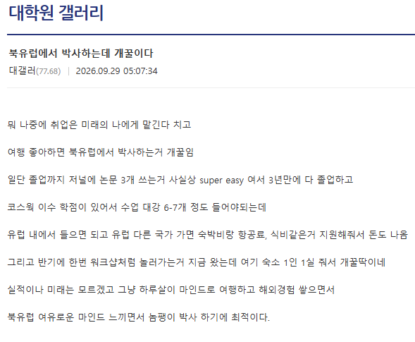
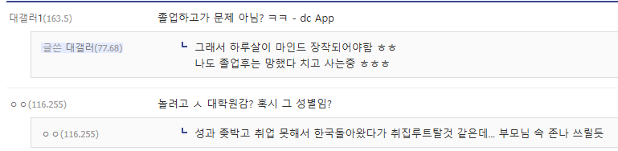

저기 적힌대로 진짜 지원금 개빠방하고 열공하면 오히려 돈 번다는 얘기나오던데 난 한국이 좋다…
고맙다…
여성이면 보지 있으니까 뭐 ㅋㅋ
북유럽이 이상저널 거르는 거 제일 먼저 하는 애들이야. 그런데 3개 쓰는게 쉬우면 쟤가 그냥 기만자여...
그 성별임?ㅋㅋㅋ
공대나 자대생이 저런 ㅂㅅ같은 논리를 쓴다고? 천잰가??? 저널 논문이 개조스로 보이나???
도데체 어떤 ㅈ밥저널에 내길래 논문 3개가 super easy라는거임? ㅋㅋ
국내 어디 학회도 개허접 학부생 논문 실어주던데 북유럽도 비슷한건 있겠지
글쓴이 글 어느흔적에도 분내 코빼기도 안보이는데 댓글끼리 맘대로 보지 붙였다 뗐다 하면서 혐오각을보네
정신좀차려라 ㅋㅋㅋㅋㅋㅋㅋㅋ
북유럽 박사 얘긴데
댓글은 죄다 여혐발언 천지네
여기도 갈라치기로 오염된 커뮤냐?
이런말 했다고 존나 반대 처박겠지 또
북유럽 : 잘 모름
박사과정 : 잘모름
여혐 : 내가 박사임, 아는거 한개 나왔다 이제 다 죽었다
너무 예민한거같은데
분야별로 차이가 있지만 내 분야 기준으로 상위 10%도 아니고 Q1이면 할만할듯.
현실은 어짜피 미국만
힘내라 개붕아